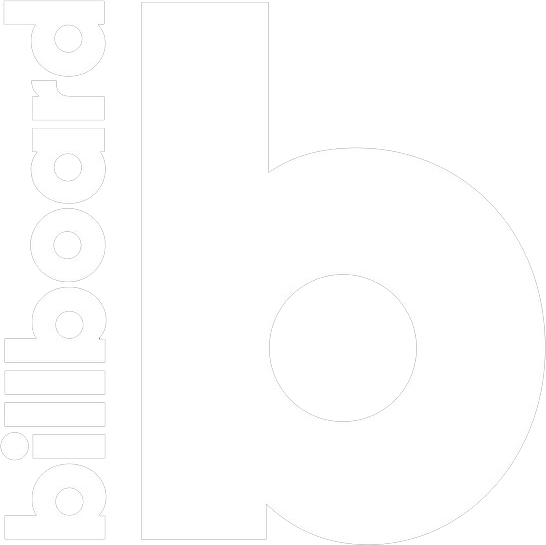

Idea
Our goal was to design and create a tool to explore the potential correlation between Pop Culture
and historical events, using some of the State of the Art NLP tools available.
The Billboard Hot 100, which is the music industry standard record chart in the United States
for songs, published weekly by Billboard magazine, is the data we used as a measure of Pop Culture. Chart rankings are based on physical and
digital sales, radio play and since recently, online streaming in the United States.

At the end of each year Billboard magazine publishes the Year-End Hot 100 singles,
which basically means the biggest successes of the year. The purpose of this project is thus to
investigate whether the fact that a song is related to a major event could help make it a great
success.
The idea of a visualization using a time-line as the x-axis came very naturally
since all the data is centered around the 1965-2015 time period. The time-line allows you
to zoom in and get a better idea of the events or songs in a tighter time range, but it also
allows you to get an overview on the entire time range. Indeed the time-line visualization combined
with the filter tool offers the possibility to find the distribution of a given feature over the
fifthy years
our data covers - e.g., the distribution of a word in the lyrics since 1965.
Datasets
In order to achieve the best results possible we had to find the best datasets possible, one for
the Billboard Hot 100 songs in the period 1965-2015 and one for the major events that
happened in that same period.
For the Billboard Hot 100 songs we started with this dataset. It
contains the artist of each song, its name, its rank, its year and its lyrics. Note that in this
dataset the lyrics are already formated in a way that was not fitting our need, so we had to get new
lyrics by ourselves using two Python lybraries and by web-scrapping manually the ones that could not
be found. We scrapped other data as the genre or album features as well as the Youtube video link,
in order to make the experience more complete.
For the major events dataset, we could not find any relevant dataset online, so we had to build our
own. On that purpose, we scrapped data from
this website,
to first get the day, month and year of each event as well as a quick description.
After that, we used the Wikipedia Python API in order to get the Wikipedia summary for each
event as well as its article's url.
Since we performed web-scrapping, some of the data might sometimes appear as not being 100%
accurate.
NLP Model
To find references between song lyrics and events, we decided to use Named Entity Recognition
(NER), which allows us to extract Entities such as Person, Date, Event, Political group,
Sociological group… An event and a song are then considered to refer to each other if they have at
least one entity in common. We
used a “soft comparison”, by saying they one of the entities must contain the other.
The NER we use comes from Spacy, and, even though it is
trained on english, it also works reasonably on other languages, and we happen to have some lyrics
that are not in English so it is quite useful.
By just doing this, we had roughly 60 references per song, which seemed like a lot, so we further
applied a text classification method based on a pretrained model of ALBERT (light version of
BERT). We vectorized both lyrics and events with the first 512 words - all further are
ignored - and then computed cosine similarity between the vectors.
Finally, a song is making a reference to an event if they have at least one entity in common, and
the cosine similarity of their vector is greater than 0.92.